All photos were shot on an iPhone at 5712 x 4284 and resized to 1200 x 1600 for processing.
Each set is one scene captured by standing still and rotating the camera, so the centre of projection stays fixed and the transform between frames is a pure homography.
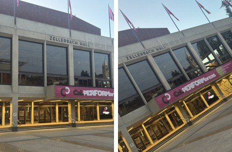
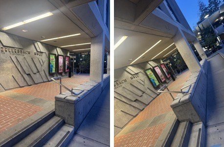
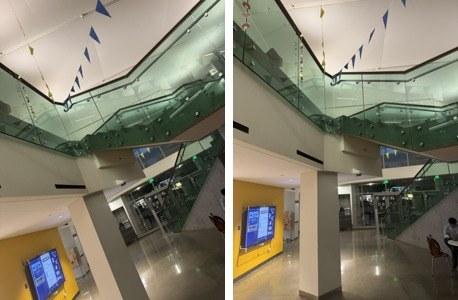
Two of the sets I discarded are worth mentioning because of why they failed. In both I had shifted my feet between frames instead of pivoting in place. That moves the centre of projection, and the resulting parallax cannot be undone by any homography, because an 8 degree of freedom projective map simply has no term for it. The mosaics came out with doubled railings and ghosted edges no matter how good the correspondences were.
A homography is \(p' = Hp\) with \(H\) a \(3\times3\) matrix. The bottom right entry is a scale factor, so there are 8 unknowns. Writing out the two coordinates of \(p'\):
Multiplying through by the denominator removes the division and makes both equations linear in the unknowns:
So every correspondence contributes two rows, and \(n\) correspondences give a system \(Ah = b\) with \(A\) of size \(2n\times8\):
Four correspondences give exactly 8 equations for 8 unknowns, so the system solves exactly.
The problem is that it solves exactly even when the points are slightly wrong, so every
clicking error goes straight into the matrix. I use 12 points instead. That gives 24 equations
for 8 unknowns, which no single \(H\) can satisfy perfectly, so numpy.linalg.lstsq
returns the one that comes closest to all of them at once and the errors average out.
One practical detail that bit me. Pixel coordinates go up to about 1600, so the \(xx'\) columns of \(A\) reach \(10^{6}\) while the column of ones stays at \(1\). Asking least squares to balance numbers that far apart loses precision. So before solving I shift and scale both point sets to sit around the origin at a typical distance of \(\sqrt{2}\), solve in those friendlier coordinates, then undo the scaling on the answer. The \(H\) that comes back still works on ordinary pixel coordinates.
The points below are the 12 correspondences used for each pair, drawn in matching colours and numbered. They were obtained with a feature detector and then filtered to a geometric consensus set, rather than clicked by hand, and a well spread subset was kept so the fit is not driven by one corner of the frame. Everything downstream of this point is written from scratch.
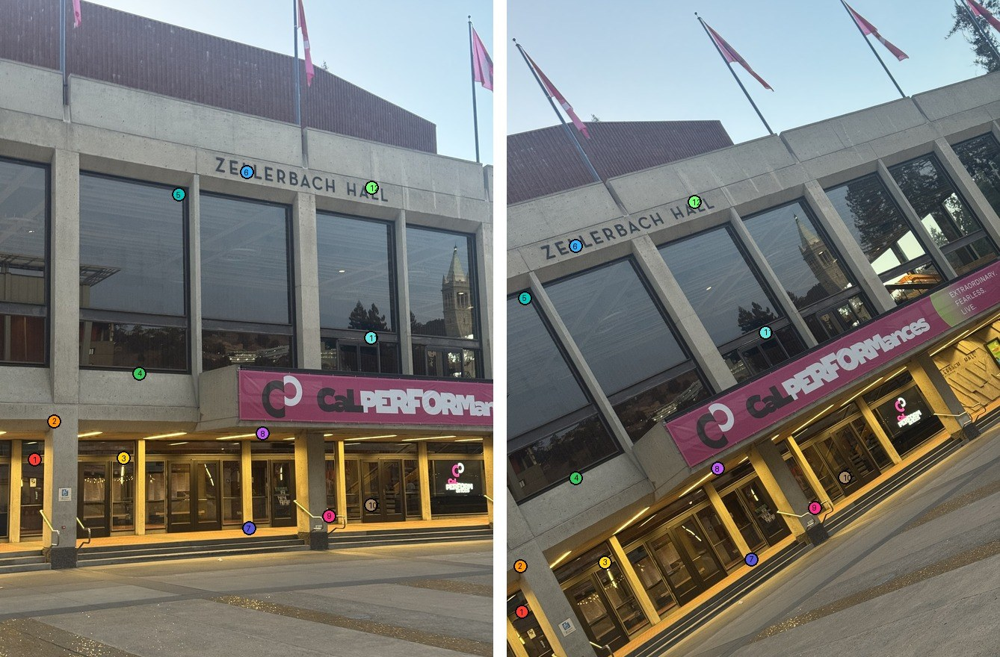
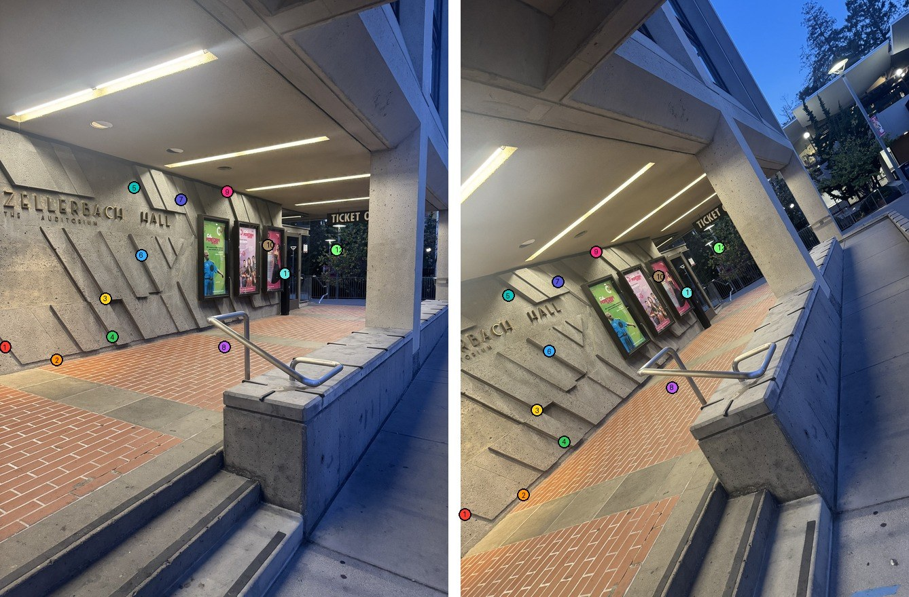
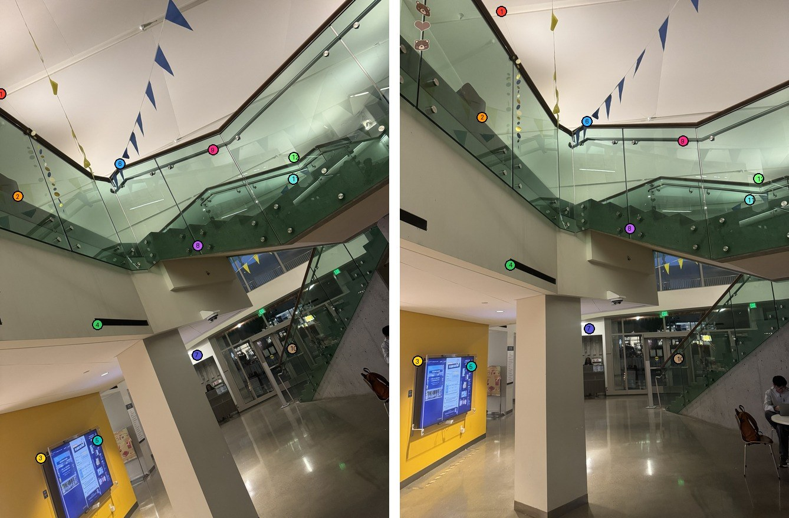
For the Zellerbach facade pair, mapping the second frame into the first:
The top left 2 x 2 block is close to a rotation, which is what I expect for two frames taken by pivoting the camera. The bottom row is small but not zero, and that is the part that makes this a homography rather than an affine transform. If those two entries were exactly zero the map would be affine and parallel lines would stay parallel.
Both warps run backwards. For every pixel in the output I run it through \(H^{-1}\) to find where it came from in the original, then read the colour there. Going this direction means every output pixel gets filled exactly once. Going forwards instead, pushing each source pixel out to wherever it lands, leaves holes: the warp stretches some regions, and nothing arrives in the gaps between the pixels that did land.
I do not pick the output size by hand either. Running the four corners of the source through \(H\) tells me where the warped image will end up, and the box around those four points is exactly the canvas I need. That box also gives the offset to shift everything into positive coordinates, since a corner can easily land at a negative position. Each warp returns an alpha mask alongside the image, marking which output pixels actually came from inside the source, and the blending step uses it later.
Nearest neighbour rounds the inverse mapped coordinate to the closest pixel
centre and copies that value. Bilinear takes the four pixels surrounding the
coordinate and combines them by area weights, with a and b the
fractional parts of the position:
I treat (0,0) as the centre of the first pixel rather than its top left corner, which makes the rounding in nearest neighbour and the fractional parts in bilinear line up with no half pixel offset between the two.
Rectification is the test that the two pieces above actually work, and it needs only one
photo. I pick something I know is rectangular, click its four corners, and then declare what
those corners should map to. If computeH and the warping are right, the slanted
subject comes out square and its text comes out level.
The first subject is a paper notice taped to a stainless panel. It is US Letter, so the target is the corners of an 850 x 1100 rectangle.
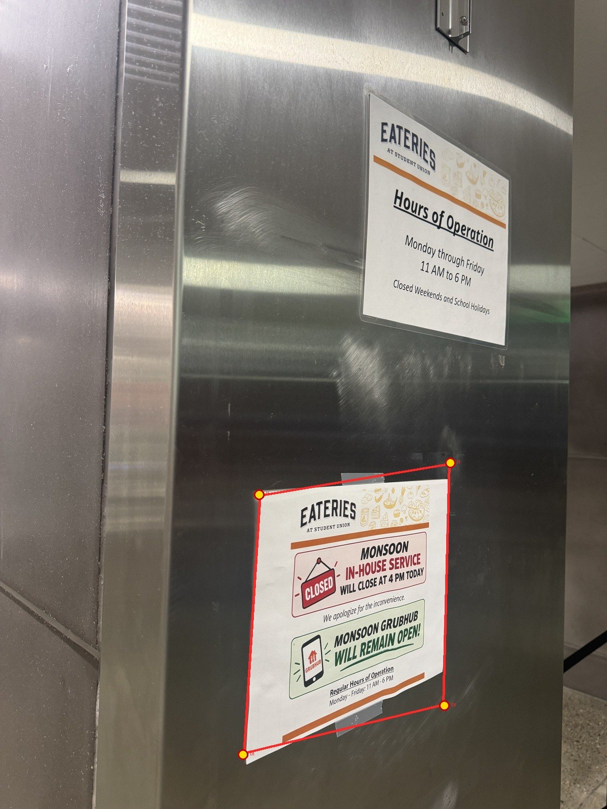
The second is a framed sign on a stand, photographed from well off to one side so the frame reads as a strong trapezoid. It is also US Letter, so the target is again 850 x 1100. Here I clicked the inner edge of the black frame, where the paper starts, rather than the outer edge of the frame itself, because that boundary is the one with real contrast against the print.
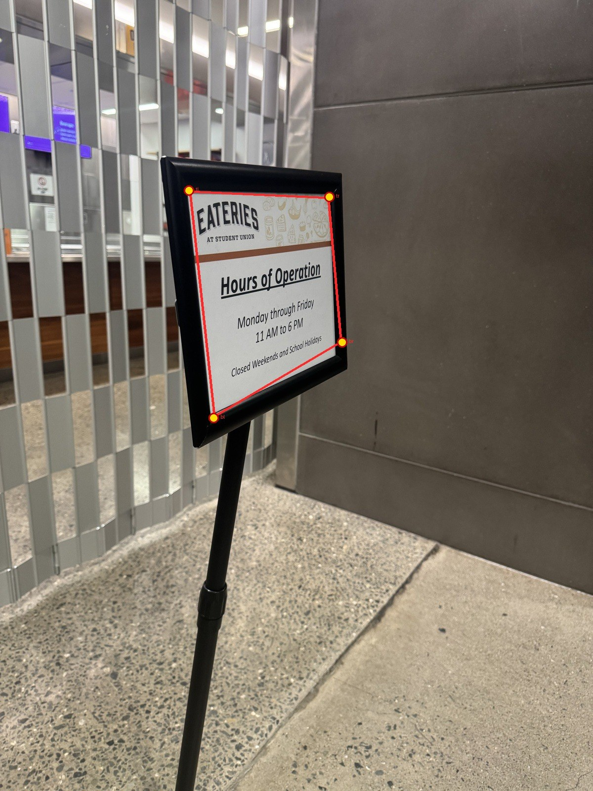
Both come out square with level text, which is the check I wanted before attempting any mosaic. Picking the corners turned out to matter more than anything else in this section. My first attempt at the framed sign was off by about 50 pixels at the bottom right, which put the right edge of the quadrilateral through the black frame instead of along the paper, and the result had a dark band down one side. I ended up reading every corner off a 6x magnified crop rather than estimating from the full frame.
The recovered matrices for the two rectifications:
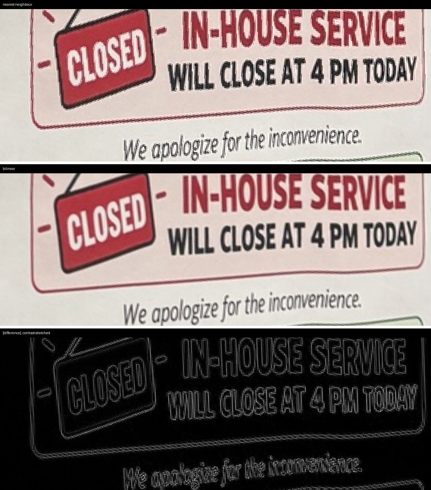
| Sampler | Time | Relative |
|---|---|---|
| Nearest neighbour | 51 ms | 1.0x |
| Bilinear | 119 ms | 2.3x |
Bilinear costs a little over twice as much, which makes sense. Nearest neighbour does one array lookup per output pixel. Bilinear does four lookups plus the weighting, but the four lookups are contiguous enough that it comes in well under the 4x the operation count would suggest.
The quality difference is easy to see on text. Nearest neighbour produces stair stepped edges on every letter and on the underline, because each output pixel takes one source value with no regard for how far off centre it landed. Bilinear smooths those edges by mixing the neighbours in proportion to the subpixel position.
The two differ by more than one intensity level on 48% of pixels, with a mean absolute difference of 4.6 and a worst case of 117. The difference image shows where: the error is concentrated entirely along edges and is near zero in flat regions. That is the whole story. In a flat area all four neighbours are nearly equal, so averaging them changes nothing, and the two methods agree. Only where the image has high frequency content does the choice of sampler matter.
For this project bilinear is clearly worth the extra cost, since a mosaic is a one time computation and the aliasing from nearest neighbour would survive into the final image. I used bilinear for every mosaic below. Nearest neighbour would be the right call if the warp had to run per frame in real time, or if the image were label data where interpolating between values is meaningless.
For each set I pick one frame as the reference and leave it unwarped. Every other frame gets a homography into that frame. All three sets here are pairs, so that is one matrix each. The code composes along neighbouring pairs rather than assuming everything overlaps the reference directly, so a longer strip would reach the reference by chaining through the frames between.
I then push all four corners of every image through its homography, take the union of the bounding boxes, and allocate one canvas that size. Every image is warped into that canvas in one shot rather than grown one at a time.
Averaging the overlap equally leaves a visible step wherever one image stops contributing, so instead each image carries an alpha that is 1 at its own centre and falls linearly to 0 at its border. That alpha is warped through the same homography as the image. Each output pixel is then the weighted average
which makes each image dominate near its own centre and hand over gradually in the overlap.
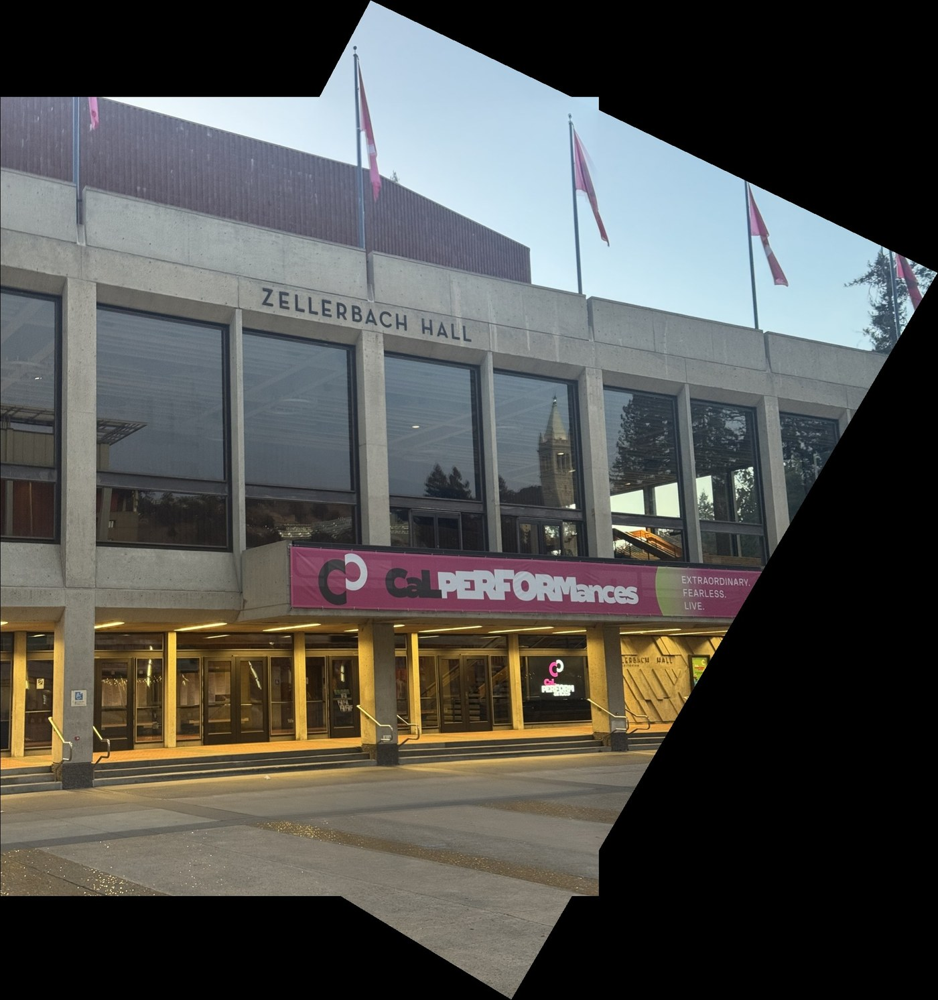
This is the cleanest of the three. The lettering on the building, the roofline and the banner all run continuously across the join, and the Campanile visible through the window glass lines up as well. The two frames were taken a couple of seconds apart with the camera pivoting almost perfectly in place.
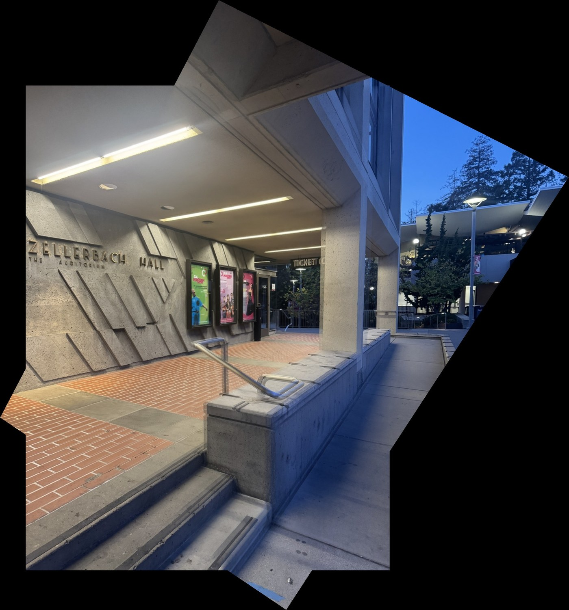
This is the pair that gains the most from being stitched. The reference frame looks straight down the covered walkway, and the second is rotated well off vertical, so the mosaic opens out past the edge of either photo to pick up the sky, the trees and the streetlamps on the right.
It is also the hardest of the three geometrically, because the scene has real depth. The handrail is a couple of feet from the camera and the trees are a hundred feet away, so any error in the pivot shows up immediately as near and far objects disagreeing. It holds: the brick paving, the concrete lettering, the display cases and the rail all stay single.
I tried pairing the same reference frame with the two later shots in this set instead, and both failed badly, with the handrail and the steps clearly doubled. Those frames were taken after I had shifted position rather than pivoting, and that is parallax rather than a bad fit.
The glass balustrade, the wooden handrail and the bunting strung across the ceiling all run unbroken through the join, which is the useful check here, since those are long thin features that make any misalignment obvious. The yellow wall and the information screen below it line up as well, which is worth checking separately because they sit much closer to the camera than the stairwell above them, so they are the first thing that would break if the pivot had drifted.
The remaining flaw here is not geometric. The ceiling is slightly brighter on one side of the join, because I left exposure on auto and the phone metered each frame separately. Feathering spreads that difference over a wide band instead of leaving a hard line, but it cannot remove it, since the two images genuinely disagree about how bright the wall is. Locking exposure before shooting would have fixed it at the source.
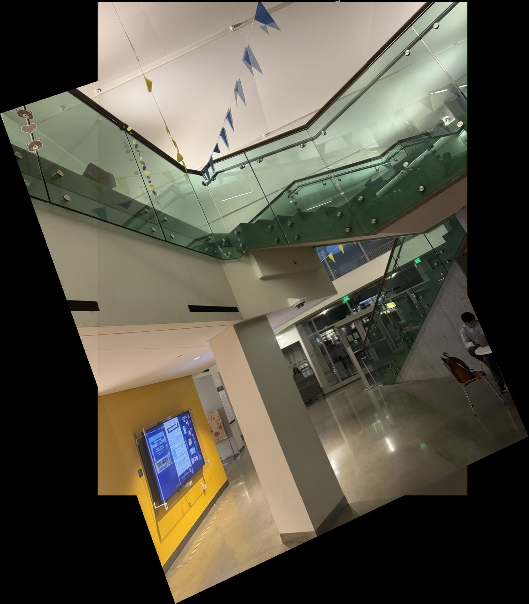
On the left every image contributes equally wherever it is present. That is still an average, so it does not tear, but the weight changes abruptly at the boundary of the overlap region and the exposure difference between frames turns into a visible step there. On the right the weights ramp, so the same difference is spread across the whole overlap and reads as a gentle gradient instead of an edge.